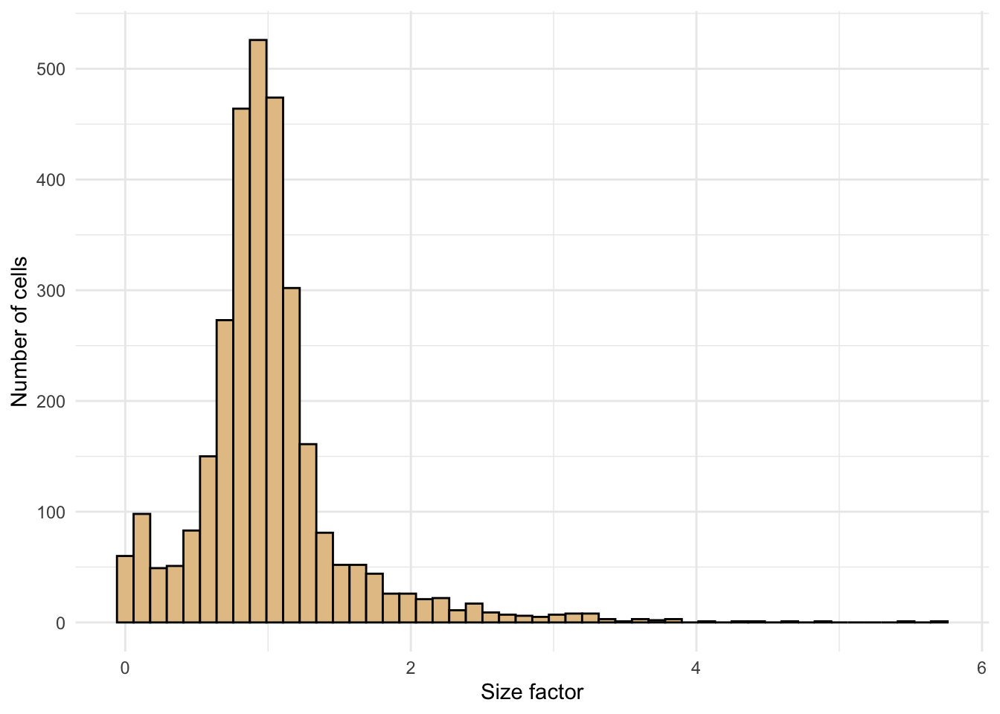
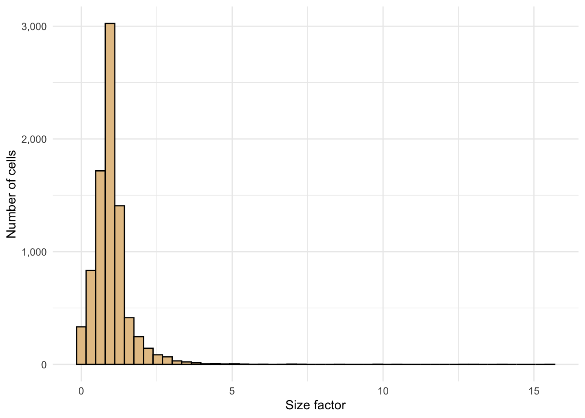
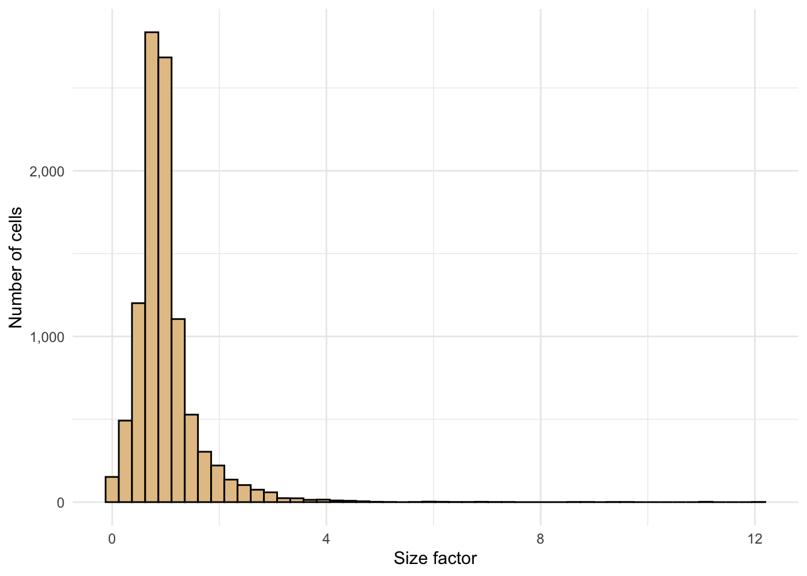

Single Cell Gene Expression
Normalization
Overview



Summary
Output
This table describes the output files produced by this document.
| File | Description |
|---|---|
| output/normalization.rds | A SingleCellExperiment object. |
Parameters
This table describes parameters used and set in this document.
| Parameter | Value | Description |
|---|---|---|
| downsample | FALSE | Logical scalar indicating whether downsampling should be performed prior to scaling and log-transformation. |
Version
This output describe the version information about R, the OS and attached or loaded packages.
R version 4.1.1 (2021-08-10)
Platform: x86_64-apple-darwin17.0 (64-bit)
Running under: macOS Big Sur 10.16
Matrix products: default
BLAS: /Library/Frameworks/R.framework/Versions/4.1/Resources/lib/libRblas.0.dylib
LAPACK: /Library/Frameworks/R.framework/Versions/4.1/Resources/lib/libRlapack.dylib
locale:
[1] en_GB.UTF-8/en_GB.UTF-8/en_GB.UTF-8/C/en_GB.UTF-8/en_GB.UTF-8
attached base packages:
[1] parallel stats4 stats graphics grDevices utils datasets
[8] methods base
other attached packages:
[1] scales_1.2.0 ggplot2_3.3.6
[3] scran_1.20.1 scuttle_1.2.1
[5] SingleCellExperiment_1.14.1 SummarizedExperiment_1.22.0
[7] Biobase_2.52.0 GenomicRanges_1.44.0
[9] GenomeInfoDb_1.28.4 IRanges_2.26.0
[11] S4Vectors_0.30.2 BiocGenerics_0.38.0
[13] MatrixGenerics_1.4.3 matrixStats_0.62.0
[15] BiocParallel_1.26.2 BiocSingular_1.8.1
[17] BiocNeighbors_1.10.0
loaded via a namespace (and not attached):
[1] edgeR_3.34.1 jsonlite_1.8.0
[3] DelayedMatrixStats_1.14.3 assertthat_0.2.1
[5] statmod_1.4.36 highr_0.9
[7] dqrng_0.3.0 GenomeInfoDbData_1.2.6
[9] yaml_2.3.5 pillar_1.7.0
[11] lattice_0.20-45 glue_1.6.2
[13] limma_3.48.3 beachmat_2.8.1
[15] digest_0.6.29 XVector_0.32.0
[17] colorspace_2.0-3 htmltools_0.5.2
[19] Matrix_1.4-1 pkgconfig_2.0.3
[21] zlibbioc_1.38.0 purrr_0.3.4
[23] ScaledMatrix_1.0.0 tibble_3.1.7
[25] farver_2.1.0 generics_0.1.2
[27] ellipsis_0.3.2 withr_2.5.0
[29] cli_3.3.0 magrittr_2.0.3
[31] crayon_1.5.1 evaluate_0.15
[33] fansi_1.0.3 bluster_1.2.1
[35] tools_4.1.1 lifecycle_1.0.1
[37] stringr_1.4.0 munsell_0.5.0
[39] locfit_1.5-9.5 cluster_2.1.3
[41] DelayedArray_0.18.0 irlba_2.3.5
[43] compiler_4.1.1 rsvd_1.0.5
[45] rlang_1.0.2 grid_4.1.1
[47] RCurl_1.98-1.6 rstudioapi_0.13
[49] htmlwidgets_1.5.4 igraph_1.3.1
[51] labeling_0.4.2 bitops_1.0-7
[53] rmarkdown_2.14 gtable_0.3.0
[55] DBI_1.1.2 R6_2.5.1
[57] knitr_1.39 dplyr_1.0.9
[59] fastmap_1.1.0 utf8_1.2.2
[61] metapod_1.0.0 stringi_1.7.6
[63] Rcpp_1.0.8.3 vctrs_0.4.1
[65] tidyselect_1.1.2 xfun_0.31
[67] sparseMatrixStats_1.4.2